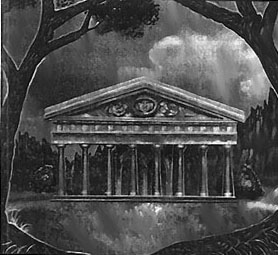

Вся мифология Амбера, как и вся его религия, основана на мнении, что Амбер изначален. В некоторых вариантах мифологии Амбер является первым отражением, в то время как в других он отбрасывает первое отражение, сам ею вовсе не являясь. Разница между Амбером как "первым городом" и Амбером как "первым отражением" спровоцировала разлад между различными верованиями в самом деле. Единственно, что веками предотвращает религиозные войны, это преобладание государственной религии Единорога. Здесь Единорог является первопричиной, а Амбер возник из Него. Этот основополагающий миф об изначальности был причиной огромного изумления Корвина, обнаружившего Лабиринт, который контролирует Лабиринт Амбера. Череда событий в "Знаке Единорога", "Руке Оберона" и "Дворах Хаоса" поколебала в Корвине - выросшем с мыслью, что Амбер абсолютен, - долго державшееся мнение о том, что же такое реальность. Есть подозрения, что после этого он исчез, испугавшись за собственный рассудок.
Пока Амбер стоит на одной крайности, мысля себя изначальным, Хаос охраняет другую, полагая, что его превосходство неоспоримо. Они конфликтуют всегда, даже если не находятся в состоянии войны.
В центре конфликта - страх. Амбер основан на категориях: причине и следствии, на порядке, иерархии и законе. Хаос, судя по названию, основан на отсутствии всего этого. Очевидно, что Амбер и Хаос не могут сосуществовать. Где силен Амбер, там слаб Хаос, и обратное тоже верно. Если взглянуть на это глазами науки двадцатого века, Амбер видится в постоянном сражении с энтропией - с рассеиванием энергии. Так вот, второй закон термодинамики гласит, что энтропия неизбежно возьмет верх надо всем; вот почему все системы, основанные на порядке, со временем потерпят поражение. Значит, мифология Амбера - это то, что спасет от этого поражения. И Амбер боится распространения Хаоса. Вероятно, именно этим и занят Единорог - созданием из легенд о том, что он пришел из прошлого, когда Хаос был слаб. А сами легенды имеют некое утешающее свойство. То, что представляет собой Единорог, кажется, отвергает Хаос.
Большая часть народа семьи Амбера видит своих правителей опекающими их и внушающими страх одновременно. Королевская семья великолепно ведет свои дела - Амбер не демократия, - но их таинственные силы находятся за пределами человеческого понимания. Добавим к этому рассказы об ужасах двора и долгие, необъяснимые исчезновения некоторых королевских любимцев, и беспокойство народа легко можно будет понять.
Корвин, например, исчезал на многие годы. Причем на столь многие годы, что большинство преданных ему последователей умерли, а до того передали ту преданность своим детям. Ко времени, когда он появился вновь, некоторые и из этих последователей умерли, а многие из оставшихся уже поменяли объект преданности. Кроме того, у него даже есть гробница. Для королевского дома появление Корвина было событием радостным или неудобным; для населения Амбера - всего лишь чудо.
В королевском доме вытворяются и прочие странности. Они говорят в карты, периодически исчезают в них, они уходят на долго и возвращаются с причудливыми людьми и вещами, они говорят о мирах, которые, вероятно, не существовали, и они, кажется, даже вне досягаемости смерти.
По всем этим причинам народ Амбера видит в королевской семье не просто правителей, но и богов, и героев. Официально они смертны, но упоминания об их смети видятся людям просто сплетнями. Их воинские подвиги делают их героями, особенно когда, они спасают Амбер. А их силы придают им ауру божественности, хотя официально они отрицают это.
Прекрасный, таинственный, объект слухов и сплетен, Единорог стоит на первом плане религии и мифологии Амбера. Единорог - Первопричина Амбера, как и святой покровитель его. Все в Амбере сводится к Единорогу, потому что Единорог сводится к Лабиринту.
По крайней мере, такова официальная история. На деле мифы и Единороге связаны с недавними событиями. Оберон увидел Единорога и принял его за изначальный символ Амбера. Верны или нет остальные мифы, на самом деле неважно; происхождение Оберона само по себе часть системы мифов Амбера.
В сердце мифов о Единороге лежит "Книга Единорога". Приписываемая Дворкину, она хранит группу особых мифов. Сейчас в Хрониках Амбера можно найти переводы с древнего Тари. Мифологически Единорог объединен с Амбером. Практически он закладывает основу государственной религии.
Государственная религия - это религия Единорога. Разрешены и другие верования, но религия Единорога - официальная. Тем не менее, эта религия далека от единства; есть много вариантов и много наименований. Варианты проистекают от того, как закладывается храм. В основном храмы связаны с видениями Единорога. Увидеть Единорога - чудо, и человек, который увидел его, поможет воздвигнуть храм на этом месте. Сами храмы - небольшие, открытые места поклонения, люди сами выбирают, чье видение для них более важно, а на самом деле - в какое из видений они верят.
Жрецы Единорога проводят церемонии в храмах. Их регалии связаны с местом, где видели Единорога, а молящиеся пытаются вернуть Единорога туда, где построен храм. Конечно же, объявляется, что Единорог присутствует в нем, пока длится церемония.
Дни Единорога (святые дни) связаны с каждым храмом в отдельности. Общенациональных дней Единорога нет, кроме, пожалуй, одного, в канун дня Летнего Солнцестояния народ Амбера выходит из домов на праздник, чтобы танцевать, пировать, смеяться и слушать музыку. Говорят, что в Канун Летнего Солнцестояния, давным-давно за дымкой прошлого, Дворкин говорил с Единорогом . Из их бесед он создал "Книгу Единорога".
Поскольку последователей каждой религии немного, ни одна религия - или вариант религии Единорога не имеет политического влияния. Это полностью устраивает королевскую семью.